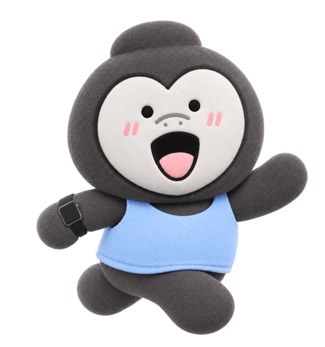

개인정보처리방침
고런(GoRun) 운영팀은 러닝 코스 탐색과 운동 기록 서비스를 제공하기 위해 다음과 같이 정보를 처리합니다.

1. 처리하는 정보와 이용 목적
| 정보 | 이용 목적 |
|---|---|
| 현재 위치, 위치 측정 시각·정확도, 이동 경로 | 출발점 설정, 코스 안내, 러닝 거리·페이스 계산 및 기록 |
| 러닝 일시·거리·시간·페이스·케이던스, 사용자가 작성한 메모 | 운동 결과 표시와 기록 관리 |
| 직접 입력하거나 음성으로 입력한 검색어 | 장소 검색, 최근 검색어 및 즐겨찾기 검색 조건 제공 |
| 목표 거리·코스 선호 기준, 직접 측정한 GPS 출발점과 해당 코스 | 코스 추천과 저장한 코스 이용 |
| 음성 검색을 사용하는 동안의 마이크 음성 | 음성을 검색어로 변환 |
| 사용자가 입력한 닉네임 | 기기 내 프로필과 호칭 표시 |
| 러닝 기록 동의 여부와 목표 거리 등 앱 설정 | 기능 이용 의사 확인과 사용자 설정 유지 |
| 문의 이메일 주소, 문의 내용 및 사용자가 첨부한 자료 | 문의 응대와 문제 해결 |
고런은 회원가입을 요구하지 않습니다. 닉네임은 이 기기의 프로필에 사용하며 계정 생성이나 로그인에 사용하지 않습니다. 운영팀은 광고 표시나 다른 앱·웹사이트에 걸친 이용자 추적을 위한 정보를 수집하지 않습니다.
2. 기기에 저장하는 정보
닉네임, 러닝 기록 동의 여부, 최근 검색어, 즐겨찾기 검색 조건, 운동 기록과 메모, 앱 설정은 이용자의 기기에 저장합니다. 닉네임과 동의 상태를 운영팀이나 외부 서비스로 전송하지 않습니다. 운영팀이 별도 서버로 자동 수집하거나 계정별로 동기화하지 않습니다.
검색으로 만든 즐겨찾기에는 사용자가 입력한 검색어, 목표 거리와 코스 선호 기준을 저장합니다. 네이버 검색 결과의 장소명·주소·좌표·원본 링크와 해당 검색 좌표로 계산한 경로는 즐겨찾기나 운동 기록에 영구 저장하지 않습니다. 다시 이용할 때 장소를 재검색하고 경로를 새로 계산합니다.
기기에서 직접 측정한 GPS 출발점과 독립된 도보망 자료로 만든 코스는 저장할 수 있습니다. 실제 러닝 중 GPS로 측정한 이동 경로와 운동 수치는 검색 기반 코스에서도 기록합니다.
코스의 고도·경사 계산에는 앱에 포함된 국토지리정보원 공개 DEM을 읽습니다. 고도 자료를 받기 위해 이용자의 좌표나 지역 타일 정보를 외부 서버로 전송하지 않으며, 실행 중 고도 자료를 다운로드하지 않습니다. 지도 SDK는 지도 표시를 위한 캐시 등 임시 데이터를 사용할 수 있습니다.
3. 위치·마이크·동작 권한
- 위치: 출발점 설정과 러닝 안내·기록에 사용합니다. 러닝 기록 중에는 화면이 꺼지거나 앱이 백그라운드에 있어도 위치를 처리할 수 있습니다.
- 마이크·음성 인식: 이용자가 음성 검색을 실행한 동안 사용합니다. 앱은 입력 음성을 별도의 녹음 파일로 저장하지 않습니다.
- 동작 및 피트니스: 휴대전화로 측정한 케이던스 표시와 기록에 사용합니다.
권한은 iOS 설정에서 변경할 수 있습니다. 마이크나 음성 인식 권한을 허용하지 않아도 키보드로 장소를 검색할 수 있습니다. 위치 권한을 제한하면 현재 위치 설정과 러닝 안내·기록이 제한될 수 있으며, 동작 권한을 허용하지 않으면 케이던스를 제공하지 못할 수 있습니다.
4. 외부 서비스 이용
기능을 제공하기 위해 기기에서 다음 서비스와 통신합니다.
| 서비스 | 이용 목적과 전달되는 정보 |
|---|---|
| NAVER Cloud Maps | 지도 표시. 표시할 지도 영역과 지도 요청에 필요한 네트워크 정보 등이 처리됩니다. |
| NAVER API HUB 장소 검색 | 장소 검색. 입력한 검색어와 요청에 수반되는 IP 주소 등 네트워크 정보가 전달됩니다. 음성 검색에서는 인식 과정에서 생성된 텍스트가 검색어로 사용됩니다. |
| Apple 음성 인식 | 음성을 텍스트로 변환. 처리 방식에 따라 음성 등이 Apple 서버로 전송될 수 있습니다. |
| Apple 위치·주소 조회 서비스 | 지도에서 선택한 위치나 현재 위치의 좌표를 주소로 표시하기 위해 해당 좌표를 Apple의 주소 조회 기능에 전달합니다. |
음성 검색에 사용하는 Apple 기능은 기기 내 처리만으로 제한하지 않습니다. Apple 공식 문서도 해당 음성 인식 기능에서 서버 처리가 이루어질 수 있음을 안내합니다. Apple 음성 인식 안내
현재 버전의 앱은 고도 계산을 위해 AWS S3 또는 Mapzen Terrain Tiles에 요청하지 않습니다. 고도 자료는 앱에 포함된 국내 공개 DEM을 기기에서 처리합니다.
외부 서비스가 자체적으로 처리하는 접속 정보 등의 보관·이용에는 해당 사업자의 정책이 적용됩니다. 운영팀이 저장하지 않는다는 설명이 외부 사업자의 서버에도 정보가 전혀 남지 않는다는 의미는 아닙니다.
5. 보관 기간과 삭제
- 닉네임은 이용자가 프로필에서 변경하거나 앱을 삭제할 때까지 기기에 보관합니다. 러닝 기록 동의 상태와 앱 설정은 앱 삭제 등으로 앱 데이터가 제거될 때까지 보관합니다.
- 최근 검색어는 이용자가 삭제하거나 최근 목록에서 제외될 때까지 기기에 보관합니다.
- 즐겨찾기와 운동 기록·메모는 이용자가 해당 항목을 삭제하거나 앱을 삭제할 때까지 기기에 보관합니다.
- 러닝 중간 기록은 중단 복구를 위해 저장하며, 기록 저장 및 복구 처리에 따라 정리합니다.
- 지도 SDK 등의 캐시는 앱 삭제 또는 운영체제의 캐시 정리 등에 따라 제거됩니다. 앱에 포함된 공개 고도 자료는 이용자의 개인 기록이 아니며 앱의 설치·업데이트·삭제와 함께 관리됩니다.
- 문의 이메일과 첨부 자료는 문의 처리가 끝난 날부터 30일 이내에 삭제합니다. 법령에 별도 보관 의무가 있는 경우에는 해당 범위와 기간에 한하여 보관합니다.
기기의 백업에 포함된 앱 데이터는 이용자의 백업 설정과 백업 서비스 정책에 따라 별도로 남아 있을 수 있습니다.
6. 이용자의 선택과 권리
첫 실행에서 러닝 기록 동의 여부를 선택합니다. 동의하지 않아도 장소 검색과 코스 추천을 사용할 수 있으며, 러닝을 시작할 때 기록 저장 동의를 다시 안내합니다. 이 선택과 iOS 위치·동작·마이크·음성 인식 권한은 별개입니다.
닉네임은 앱의 설정 → 프로필 → 회원 정보 수정에서 변경할 수 있습니다.
최근 검색어는 앱의 프로필에서 삭제할 수 있습니다. 즐겨찾기와 운동 기록은 해당 목록의 삭제 기능으로 제거할 수 있습니다. iOS 설정에서 앱을 삭제하여 기기에 저장된 앱 데이터를 제거할 수도 있습니다. ‘앱 정리하기’는 데이터를 남길 수 있으므로 앱 삭제와 구분해 주세요.
운영팀이 받은 문의 정보의 열람·정정·삭제·처리 정지는 위 이메일로 요청할 수 있습니다. 기기에만 저장된 운동 기록은 운영팀이 원격으로 열람하거나 삭제할 수 없어 앱 내 삭제 방법을 안내합니다.
러닝 결과를 공유하면 이용자가 선택한 이미지와 내용이 선택한 앱 또는 상대방에게 전달됩니다. 공유 전 이동 경로 등 위치정보의 포함 여부를 확인해 주세요.
7. 정보 보호
운영팀은 처리 목적에 필요한 정보만 사용하고, 앱의 파일 보호 기능과 암호화된 네트워크 통신을 활용합니다. 문의 정보는 응대에 필요한 담당자가 취급하며 보관 기간이 끝나면 삭제합니다.
고런의 지원·개인정보처리방침 웹페이지는 GitHub Pages를 이용합니다. GitHub는 페이지 방문자의 IP 주소를 보안 목적으로 기록할 수 있습니다. GitHub Pages 데이터 처리 안내
8. 방침 변경
처리하는 정보나 서비스 내용이 달라지면 이 페이지의 개인정보처리방침과 시행일을 수정하여 알립니다. 별도의 안내나 동의가 필요한 변경은 해당 절차를 진행합니다.